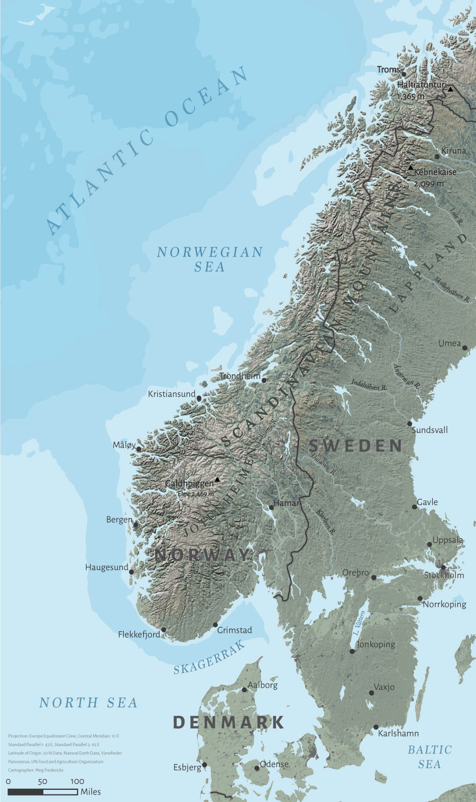

Scandinavia Terrain Representation

About This Project
This is my first attempt at mapping terrain, with a focus on the western coast of Noway and the surrounding regions. It was created for an advanced cartography course at the University of Wisconsin-Madison. The terrain was created using a 10 million scale DEM, and I used ArcMap for raster processing. Photoshop was used for land cover and texture, and Illustrator was used to edit vector data and typography.
Other Projects